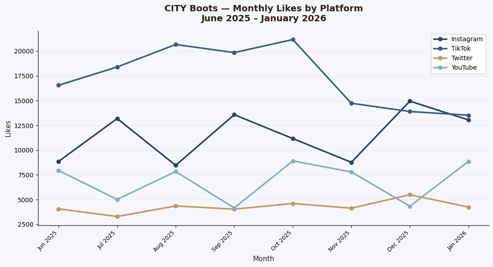

Experiment A — CSS Animations & Editorial Redesign
I chose to first focus on Experiment A, to focus on the overall enhancement of my portfolio that reflects my style and goals. My first step was to find inspiration for the direction I wanted to go in. This included compiling fonts, photos, colors, animations, and transitions. I used a completely new color palette in my CSS, which included soft creams, navy blues, and brown. I then swapped the fonts and imported Google Fonts — Playfair Display and Lora — and a new italic serif for headings that makes my portfolio feel more professional.
Lastly, I changed the CSS animations with a page load, scroll triggered, and hover transitions. This was the most difficult and time consuming to learn how to do, but also the most impacting and rewarding. I used AI to assist me in the animations through the DOMContentLoaded section and the IntersectionObserver, which triggers the CSS transition. AI was most helpful in the IntersectionObserver. It poses a problem when the software can't understand the vision in my head for my portfolio, but that makes me strive to work harder in learning coding myself.
Experiment B — Python Visualization: CITY Boots
For Experiment B I created a Python visualization in Google Colab using a fake social media engagement dataset for CITY Boots (a brand I actually interned at the summer of 2025). I used the dates June 2025 through January 2026 to reflect the time I was working there, making the data feel personal and specific rather than generic. The dataset was generated using numpy and pandas across four platforms: Instagram, TikTok, Twitter, and YouTube. I used with columns for Likes, Comments, and Shares.
The code runs in three stages — building the data with a nested loop, grouping it with groupby then drawing both charts with matplotllib. Drawing the bars was the hardest part. I couldn't figure out that writing x - width, x, and x + width was how to avoid stacking them on top of each other. AI significantly sped up this process, specifically the syntax for grouped bar charts, but I would probably better comprehend the material if I couldn't use it as an aid.


Critical Reflection
Process Evaluation and Ethical Considerations
AI was most helpful for syntax I hadn't encountered before, specifically the IntersectionObserver. The JavaScript and grouped bar chart positioning in Python was also something I wasn't familiar with. Both have very specific structures that are hard to guess without prior experience. AI lacks the ability to create authentic and aesthtically specifc work that reflects my own creative vision. This poses as an ethical problem because it lacks individuality.